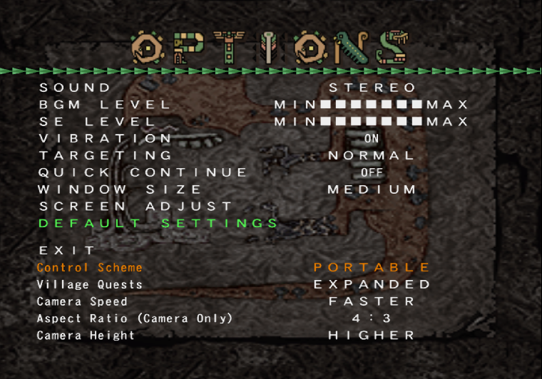

Monster Hunter G Plus
An improvement patch for the Japanese version of Monster Hunter G.
Features
Settings
- Control Scheme: Play with original Analog controls or PSP-style from later games.
- Village Quests: Allows you to toggle an alternative method for the game to randomize which quests appear every time you enter the village, which not only shows more quests each time, but also includes brand new gathering quests unlocked after each Urgent quest.
- Camera Speed: Allows you to increase or decrease the speed at which the camera rotates during hunts.
- Aspect Ratio: Adjust the FOV of the game, allowing the game to display its world in 4:3, 16:9 or even 21:9 aspect ratios.
- Camera Height: Allows you to set the starting camera height when you start a quest.
Other Changes
- The barrel next to the Village Chief now acts as a complete item box.
- Fixes the behavior of the ESP skill to be in-line with an official patch distributed by Capcom, as well as later games in the series.
- The x0.5 penalty for attacking too late is restored, and can now be lifted by using the ESP skill.
Installation and Download
Download and apply the patches in order, depending on your needs:
I have an unmodified MHG Japanese ISO and would like to keep it in Japanese
Just apply G Plus.
GPlus for Japanese ISO Download
I have an unmodified MHG Japanese ISO and would like to play in English
First apply the english patch, then G Plus.
English Remix v13 Patch
GPlus for English ISO Download
I have an MHG ISO that has already been patched with English Remix v13
Just apply G Plus.
GPlus for English ISO Download